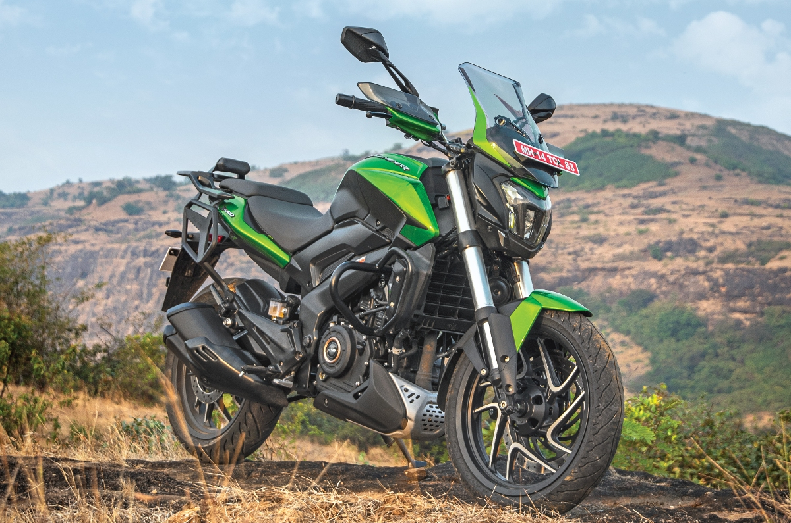
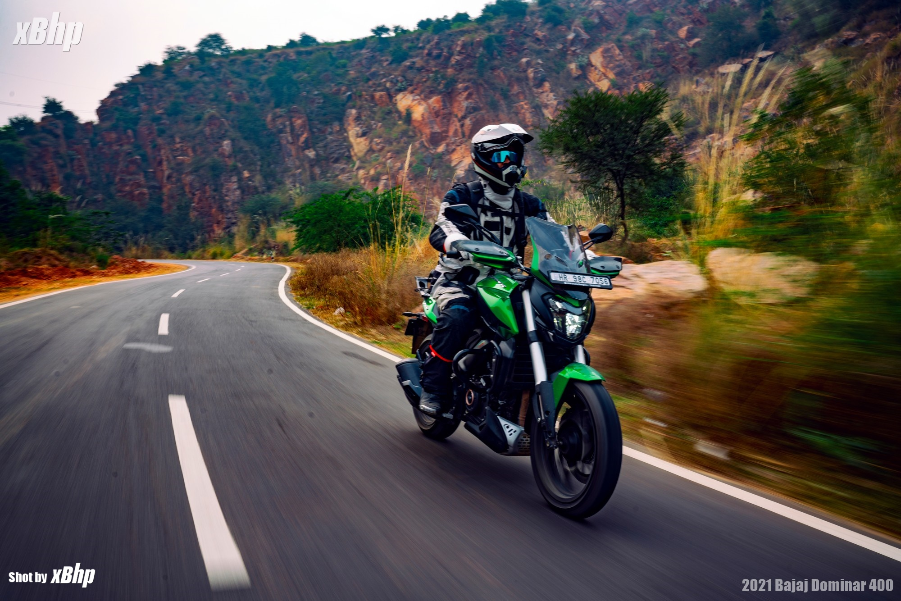

The Dominar 400 is Bajaj’s flagship offering. The bike was designed to be a sporty touring motorcycle that could capture the 300-400cc touring segment, which was dominated by motorcycles from brands like Royal Enfield. The Dominar’s engine is based on the previous-gen KTM 390 Duke’s engine, with a few tuning and mechanical changes that makes it more suited to touring needs.
The engine used in the Dominar 400 is an 373.3cc DOHC liquid-cooled single-cylinder motor originating from the older-gen KTM 390 Duke’s power plant. Bajaj has done some mechanical and tuning changes to the engine which makes it more suited for touring, keeping in line with the bike’s overall design. The engine produces 40PS at 8800rpm and 35Nm at 6500rpm and is paired to a 6-speed gearbox with slip-and-assist clutch.
link for the bajaj dominar website Bike
| Engine Capacity | 373.3 cc |
| Mileage - ARAI | 30 kmpl |
| Transmission | 6 Speed Manual |
| Kerb Weight | 193 kg |
| Fuel Tank Capacity | 13 litres |
| Seat Height | 800 mm |